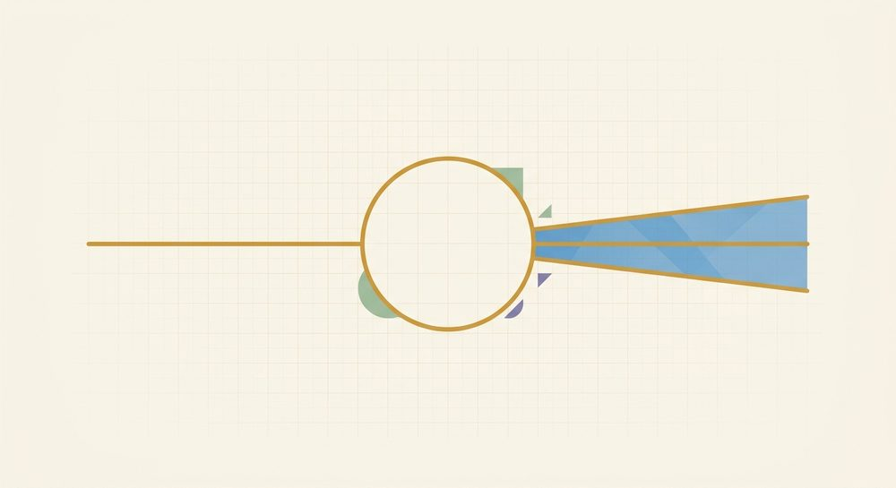

Inequalities
Fresh, parallel-form problems with full worked solutions — more reps for the skills in this unit, kept separate from the textbook's own problems.

Lesson 8.1: One-variable inequalities
Solve 3x − 4 > 11, then describe its number-line graph (which circle, which way to shade).
Worked solutionTry it first, then open.
Add 4 to both sides: 3x > 15. Divide by +3 (positive → no flip): x > 5. The boundary value comes from the matching equation 3x − 4 = 11 → 3x = 15 → x = 5. Strict (>) so an open circle at 5, shade right (toward larger values). Test a point: x = 6 gives 3(6) − 4 = 14 > 11. Solution: x > 5.
Answer: 5
Solve −4x ≤ 20, then describe its number-line graph.
Worked solutionTry it first, then open.
Divide both sides by −4 → FLIP the sign (dividing by a negative): x ≥ −5. The boundary is −4x = 20 → x = −5. Inclusive (≥) so a filled circle at −5, shade right. Test a point: x = 0 gives −4(0) = 0 ≤ 20, and 0 ≥ −5 — the test agrees, confirming the flip. (Had we forgotten to flip and written x ≤ −5, then x = 0 would be wrongly excluded.) Solution: x ≥ −5.
Answer: -5
Solve 8 − x < 3, then describe its number-line graph.
Worked solutionTry it first, then open.
Subtract 8 from both sides: −x < −5. Divide by −1 → FLIP: x > 5. The boundary is 8 − x = 3 → −x = −5 → x = 5. Strict (>) so an open circle at 5, shade right. Test a point: x = 6 gives 8 − 6 = 2 < 3, and 6 > 5. (Flip-free route: add x to both sides → 8 < 3 + x → 5 < x, i.e. x > 5 — same answer.) Solution: x > 5.
Answer: 5
Solve 2x + 1 ≥ 5x − 8 (variable on both sides), then describe its number-line graph.
Worked solutionTry it first, then open.
Collect the variable on one side: subtract 5x from both sides → −3x + 1 ≥ −8. Subtract 1 → −3x ≥ −9. Divide by −3 → FLIP: x ≤ 3. The boundary is 2x + 1 = 5x − 8 → −3x = −9 → x = 3. Inclusive (≤) so a filled circle at 3, shade left. Test a point: x = 0 gives 2(0)+1 = 1 ≥ 5(0)−8 = −8, and 0 ≤ 3. Solution: x ≤ 3.
Answer: 3
Lesson 8.2: Compound inequalities
Solve the compound inequality −3 < x − 1 < 5 and describe its graph (segment-between for and, two rays for or).
Worked solutionTry it first, then open.
This is a three-part 'and'. Do the same move to all three parts: add 1 to each → −3 + 1 < x < 5 + 1, i.e. −2 < x < 6. Both ends strict, so open circles at −2 and 6, shade the segment between (an 'and' = the overlap, one piece). Test a point inside: x = 0 gives −3 < 0 − 1 = −1 < 5. Solution: −2 < x < 6.
Answer: -2 < x < 6 (and; open circles at -2 and 6, shade the segment between)
Solve 1 ≤ 3x + 1 ≤ 13 and describe its graph.
Worked solutionTry it first, then open.
Three-part 'and'. Subtract 1 from all three parts: 0 ≤ 3x ≤ 12. Divide all three by +3 (positive → no flip): 0 ≤ x ≤ 4. Both ends inclusive, so filled circles at 0 and 4, shade the segment between. Test a point: x = 2 gives 1 ≤ 3(2)+1 = 7 ≤ 13. Solution: 0 ≤ x ≤ 4.
Answer: 0 <= x <= 4 (and; filled circles at 0 and 4, shade the segment between)
Solve 3x ≤ −6 or x − 2 > 1 and describe its graph.
Worked solutionTry it first, then open.
This is an 'or' — solve each part separately, then union. Left: 3x ≤ −6 → divide by +3 → x ≤ −2. Right: x − 2 > 1 → add 2 → x > 3. The two rays don't touch, so the solution is everything in either: x ≤ −2 (filled circle at −2, shade left) or x > 3 (open circle at 3, shade right). Test: x = −5 satisfies the left part (3(−5) = −15 ≤ −6); x = 10 satisfies the right (10 − 2 = 8 > 1). Solution: x ≤ −2 or x > 3.
Answer: x <= -2 or x > 3 (or; filled circle at -2 shading left, open circle at 3 shading right; two rays)
Solve −8 < −2x ≤ 2 and describe its graph. (Light stretch: dividing a three-part inequality by a negative flips BOTH signs.)
Worked solutionTry it first, then open.
Divide all three parts by −2 → FLIP both signs: −8/(−2) > x ≥ 2/(−2), i.e. 4 > x ≥ −1. Rewrite left-to-right in increasing order (smaller number on the left): reading 4 > x ≥ −1 backwards gives −1 ≤ x < 4. Only the positions move, so the strict end stays strict (4 keeps its open mark) and the inclusive end stays inclusive (−1 keeps its filled mark). Graph: filled circle at −1, open circle at 4, shade the segment between. Test inside: x = 0 gives −8 < −2(0) = 0 ≤ 2. Endpoint x = −1: −2(−1) = 2, and −8 < 2 ≤ 2 (−1 is in); endpoint x = 4: −2(4) = −8, and −8 < −8 is false (4 is out). Solution: −1 ≤ x < 4.
Answer: -1 <= x < 4 (three-part divide by -2, FLIP both signs, rewrite increasing; filled circle at -1, open circle at 4, shade between)
Lesson 8.3: Absolute value: graphs & distance
Solve |x| = 9 (give both solutions) and check them.
Worked solutionTry it first, then open.
Read |x| as distance from 0: 'which numbers are 9 units from 0?' Both ways → x = 9 or x = −9. Check: |9| = 9 and |−9| = 9. Solution: x = 9 or x = −9.
Answer: 9,-9
Solve 4|x| = 20 (isolate the absolute value first), give both solutions.
Worked solutionTry it first, then open.
Isolate |x| first: divide both sides by 4 (positive → no flip) → |x| = 5. Now read it as distance 5 from 0, both ways → x = 5 or x = −5. Check: 4|5| = 20 and 4|−5| = 20. Solution: x = 5 or x = −5.
Answer: 5,-5
Solve |x| < 7 and describe its graph.
Worked solutionTry it first, then open.
Read it as distance from 0: 'which numbers are LESS than 7 units from 0?' Within 7 of 0 in both directions → −7 < x < 7. 'Within / less-than' becomes an AND (one segment). Both ends strict → open circles at −7 and 7, shade the segment between. Test a point inside: x = 0 gives |0| = 0 < 7; x = 7 gives |7| = 7 < 7 is false (excluded, as the open circle shows). Solution: −7 < x < 7.
Answer: -7 < x < 7 (within; open circles at -7 and 7, shade the segment between -- an 'and')
Solve 2|x| ≥ 10 (isolate first, then read it) and describe its graph. (Light stretch: combine isolating with the 'outside → or' reading.)
Worked solutionTry it first, then open.
Isolate |x| first: divide both sides by 2 (positive → no flip) → |x| ≥ 5. Read it as distance from 0: 'which numbers are AT LEAST 5 units from 0?' That's everything 5 or more from 0 in either direction → x ≤ −5 or x ≥ 5. 'Outside / greater-than' becomes an OR (two rays). Both ends inclusive → filled circles at −5 and 5, shade outward. Test: x = −6 gives 2|−6| = 12 ≥ 10; x = 0 gives 2|0| = 0 ≥ 10 is false (correctly outside the solution). Solution: x ≤ −5 or x ≥ 5.
Answer: x <= -5 or x >= 5 (isolate: divide by 2 -> |x|>=5; 'outside' is an 'or'; filled circles at -5 and 5, two rays)
Lesson 8.4: Graphing linear inequalities (two variables) & systems
Graph y > 4x + 2: name the boundary line, say dashed or solid, do the origin test out loud, and which side to shade. (The eval finds the boundary point at x = −1.)
Worked solutionTry it first, then open.
Boundary: replace > with = → y = 4x + 2. It is dashed because the inequality is strict (>), so the line itself is not included. Two points to plot: (0, 2) and, computing at x = −1, y = 4(−1) + 2 = −2 → (−1, −2). Test the origin (0,0): is 0 > 4(0) + 2 = 2? False → shade the side NOT containing the origin (above the dashed line). Solution: dashed boundary y = 4x + 2; shade the half-plane above it.
Answer: -2
Graph y ≤ −3x + 5: name the boundary line, dashed or solid, do the origin test, and which side to shade. (The eval finds the boundary point at x = 2.)
Worked solutionTry it first, then open.
Boundary: y = −3x + 5. It is solid because the inequality is inclusive (≤), so the line is included. Two points: (0, 5) and, at x = 2, y = −3(2) + 5 = −1 → (2, −1). Test the origin (0,0): is 0 ≤ −3(0) + 5 = 5? True → shade the side CONTAINING the origin (below the solid line). Solution: solid boundary y = −3x + 5; shade the half-plane below it (and the line itself).
Answer: -1
Graph y < ¼x − 3 (fractional slope): name the boundary, dashed or solid, do the origin test, and which side to shade. (The eval finds the boundary point at x = 8.)
Worked solutionTry it first, then open.
Boundary: y = ¼x − 3. It is dashed (strict <). Pick x-values that clear the fraction: at x = 0, y = −3 → (0, −3); at x = 8, y = ¼(8) − 3 = 2 − 3 = −1 → (8, −1). Test the origin (0,0): is 0 < ¼(0) − 3 = −3? False → shade the OTHER side (below the dashed line). Solution: dashed boundary y = ¼x − 3; shade the half-plane below it.
Answer: -1
Graph the system y > x − 2 and y ≤ −x + 4. Describe the solution region (which boundaries, dashed or solid, and where the overlap sits). (Light stretch: a system is the overlap, not the union.)
Worked solutionTry it first, then open.
Boundary 1: y = x − 2, dashed (strict >). Test (0,0): is 0 > 0 − 2 = −2? True → shade the side with the origin (above this line). Boundary 2: y = −x + 4, solid (inclusive ≤). Test (0,0): is 0 ≤ −0 + 4 = 4? True → shade the side with the origin (below this line). The solution is the OVERLAP of the two shaded regions — a wedge containing the origin, bounded below by the dashed line y = x − 2 and above by the solid line y = −x + 4. Confirm with a point inside, e.g. (1,1): 1 > 1 − 2 = −1 and 1 ≤ −1 + 4 = 3. Solution: the overlapping wedge (the dashed lower edge excluded, the solid upper edge included).
Answer: System y > x - 2 (dashed) and y <= -x + 4 (solid); solution is the overlap wedge containing the origin -- e.g. (1,1) satisfies both
Mixed review
Problems that mix skills from across the unit — good for spacing earlier work back in.
Solve −2x + 3 > 11 and describe its number-line graph. (Mixes 8.1 solving with the negative-coefficient flip.)
Worked solutionTry it first, then open.
Subtract 3 from both sides: −2x > 8. Divide by −2 → FLIP: x < −4. The boundary is −2x + 3 = 11 → −2x = 8 → x = −4. Strict (<) so an open circle at −4, shade left. Test a point: x = −5 gives −2(−5) + 3 = 13 > 11, and −5 < −4 — the test confirms the flip. Solution: x < −4.
Answer: -4
Solve |x| = 6 (give both solutions) and check. (8.3 absolute value as distance from 0.)
Worked solutionTry it first, then open.
Distance from 0: which numbers are 6 units from 0? Both ways → x = 6 or x = −6. Check: |6| = 6 and |−6| = 6. Solution: x = 6 or x = −6.
Answer: 6,-6
Solve x + 4 < 2 or 2x > 10 and describe its graph. (8.2 compound 'or'.)
Worked solutionTry it first, then open.
An 'or' — solve each part, then union. Left: x + 4 < 2 → subtract 4 → x < −2. Right: 2x > 10 → divide by +2 → x > 5. The pieces don't touch, so the solution is everything in either: x < −2 (open circle at −2, shade left) or x > 5 (open circle at 5, shade right). Test: x = −3 makes the left true (−3 + 4 = 1 < 2); x = 6 makes the right true (2(6) = 12 > 10). Solution: x < −2 or x > 5.
Answer: x < -2 or x > 5 (or; open circle at -2 shading left, open circle at 5 shading right; two rays)
Graph y ≥ 2x − 5: name the boundary, dashed or solid, do the origin test, and which side to shade. (8.4 — the eval finds the boundary point at x = 3.)
Worked solutionTry it first, then open.
Boundary: y = 2x − 5, solid because the inequality is inclusive (≥). Two points: (0, −5) and, at x = 3, y = 2(3) − 5 = 1 → (3, 1). Test the origin (0,0): is 0 ≥ 2(0) − 5 = −5? True → shade the side CONTAINING the origin (above the solid line). Solution: solid boundary y = 2x − 5; shade the half-plane above it (line included).
Answer: 1
Solve 2|x| < 14 (isolate first, then read it) and describe its graph. (Light stretch interleaving 8.3 absolute value with 8.2 compound 'and'.)
Worked solutionTry it first, then open.
Isolate the absolute value first: divide both sides by 2 (positive → no flip) → |x| < 7. Read it as distance from 0: which numbers are LESS than 7 from 0? Within 7 in both directions → −7 < x < 7. 'Within / less-than' becomes an AND (one segment). Both ends strict → open circles at −7 and 7, shade the segment between. Test inside: x = 0 gives 2|0| = 0 < 14; x = 7 gives 2|7| = 14 < 14 is false (correctly excluded). Solution: −7 < x < 7.
Answer: -7 < x < 7 (isolate: divide by 2 -> |x|<7; 'within' is an 'and'; open circles at -7 and 7, shade between)